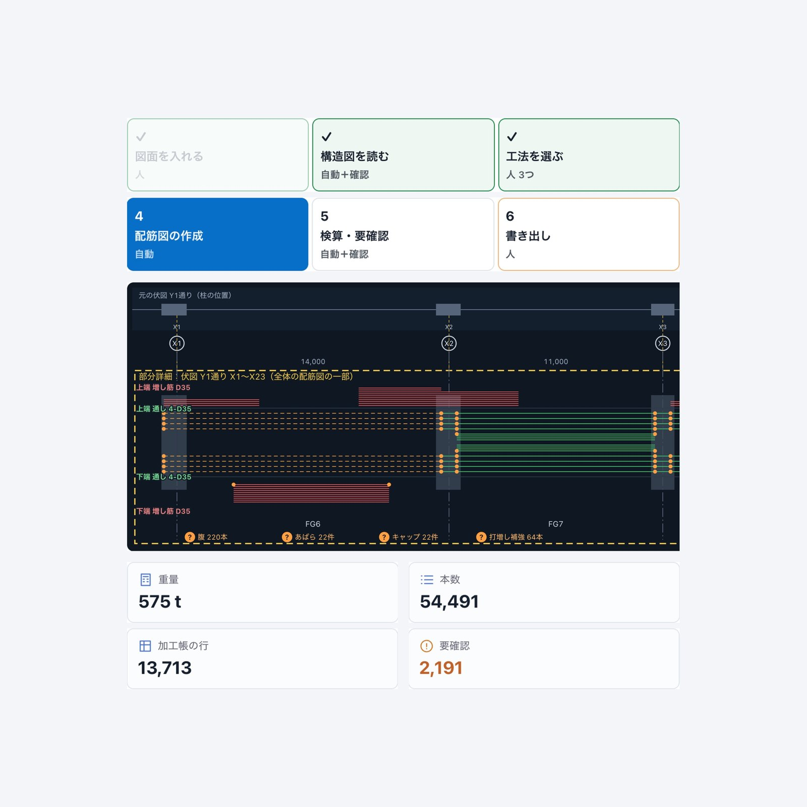
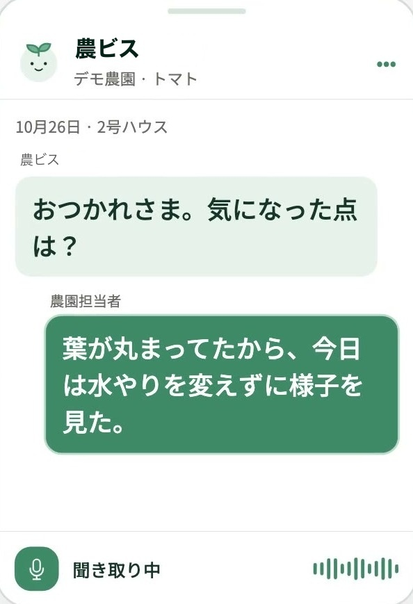
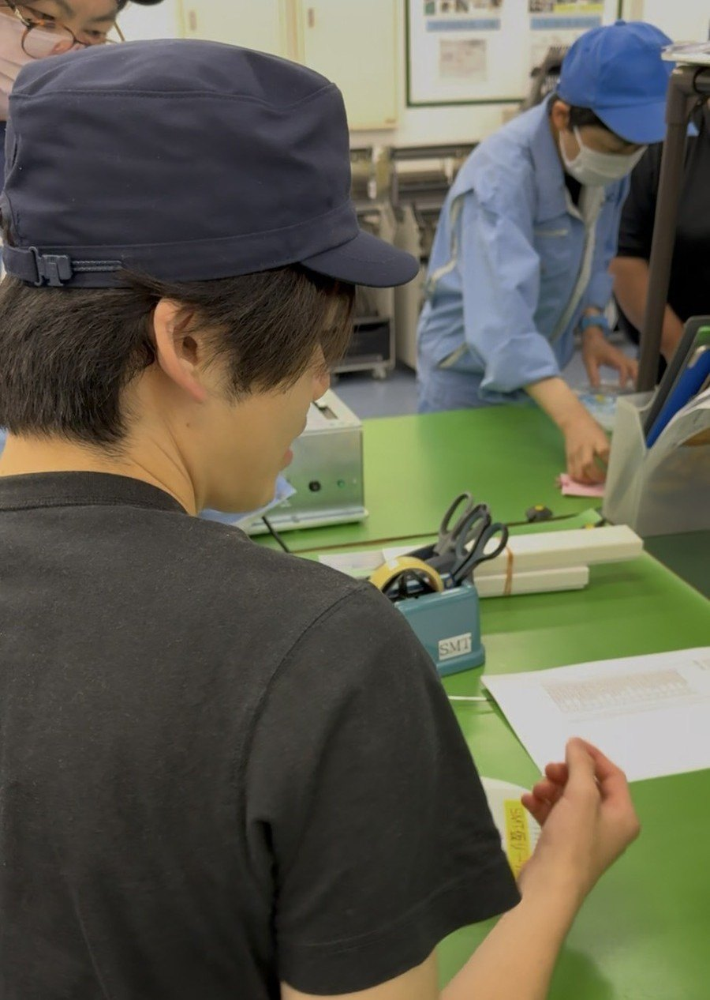

図面の読み込みから配筋図・積算までを自動化する業界SaaS「Carry」

- 課題
- 構造図と施工図からの拾い出し、配筋図の作成、積算までを人手で行い、1現場あたり丸2日を要していた。
- 取り組み
- 元鉄筋工事の職人と共同開発。図面を読み込み、工法を選ぶだけで全通りの配筋図・加工帳・積算を自動で作成するSaaSを構築した。
- 成果と展望
- 本番環境で稼働し、元鉄筋工事の職人と成約ごとに収益を分け合う共同事業として外販を推進。複数の鉄筋工事会社から導入の引き合いを受け、全国展開を進めている。


01
AI Solution
エンジニアが現場に入り、属人化した判断や業務を、専用のAIで仕組みに変えます。要件が明確な企業には受託開発、課題の特定から始める企業にはFDE（現場伴走）で参画し、現場で生まれたAIを業界と共同のSaaSへ育てます。
2つの参画形態
受託開発の特長



FDEの特長
AI事業の全体像
建設
農業
広告
他業界
AI受託開発
要件を定義し、業務特化型AIを開発・納品
将来的に業界と共同でSaaSとして展開
現場の知見を
次の案件と
製品に還元
FDE・現場伴走
エンジニアが常駐し、運用定着まで月額で支援
あぐてくの共通AIモジュール
FDE・受託開発の事例


ご相談
開発のご相談から協業のご提案まで、担当者がお返事します。